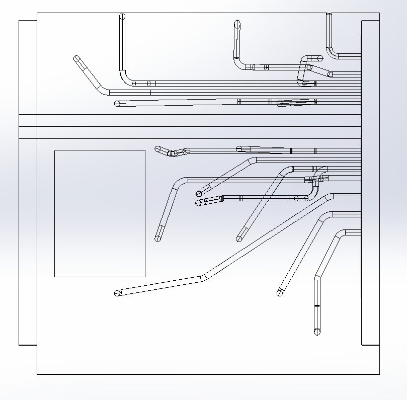
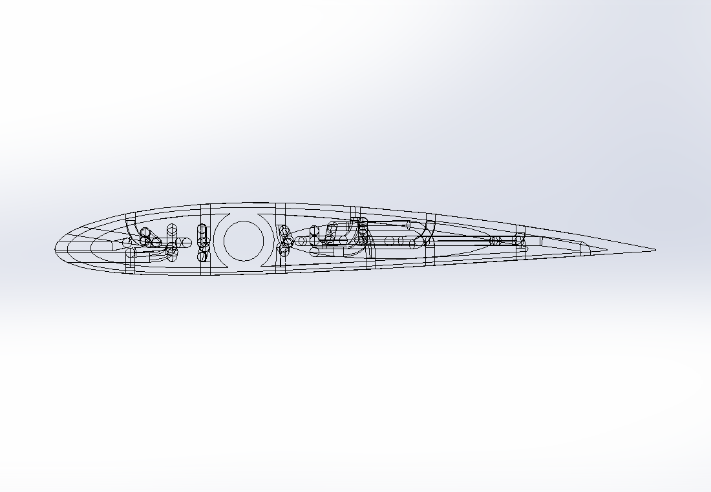
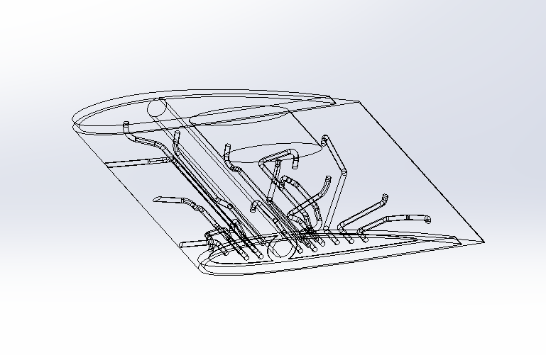
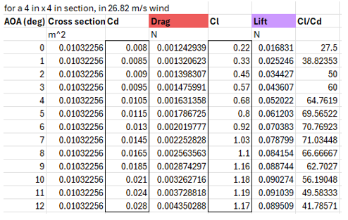
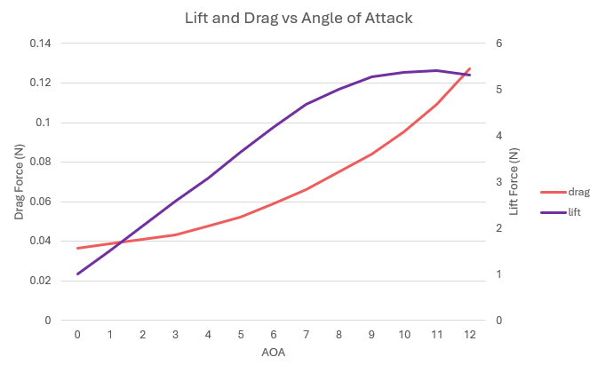
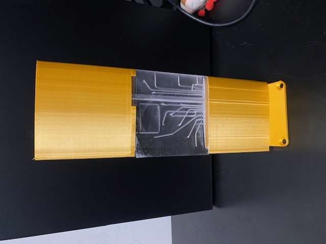

Airfoil Project
In my Fluiddynamics course I had the opportunity to design and manufacture a NACA 2412 airfoil. The goal of this project was characterizing lift and drag forces at different angles of attack within a 12" x 12" wind tunel at speeds of up to 60 mph.
The test setup features a total of 16 pressure taps, each of which are connected to a manometer.
The CAD was created using SolidWorks, the middle section was 3D printed using resin (formlabs) and the outer two sections were 3D printed using PLA (Bambo Lab).

CAD Development
The middle airfoil features a total of 16 pressure taps. They are spread across the upper and lower surface and the leading, and trailing edge.
Resin was used to manufacture this section to achieve adequate tolerancing along the inner channels, as well as a smooth surface finish. This is important, because the geometrical accuracy of the channels, and the surface roughness of the airfoil will affect the accuracy of the results.



Measured Data
This graph shows theoretical lift and drag forces [N] at different angles of attack for a 4" x 4" cross-section at wind speeds of 60 mph.
Data Trends


Final Assembly
This image shows the full 4" x 12" airfoil, including the mounting plate for attachment to the wind tunnel. Since the pressure taps are only located on the middle section, the influence of the outer two sections on the esperimental results are negligible. Therefore, to reduce material costs, the two outer sections were fabricated using PLA.